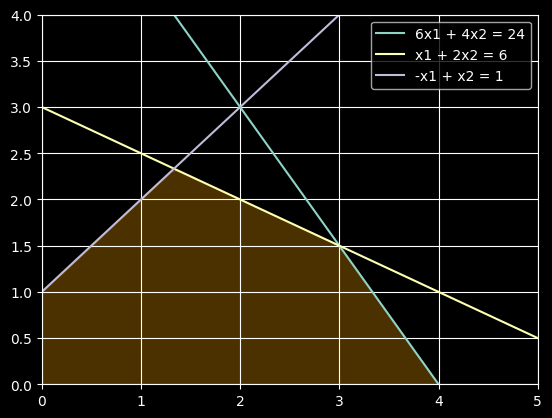

import numpy as np
import matplotlib.pyplot as plt
x = np.linspace(0, 5, 100)
y1 = (24 - 6*x) / 4 # из 6x1 + 4x2 <= 24
y2 = (6 - x) / 2 # из x1 + 2x2 <= 6
y3 = 1 + x # из -x1 + x2 <= 1
plt.plot(x, y1, label='6x1 + 4x2 = 24')
plt.plot(x, y2, label='x1 + 2x2 = 6')
plt.plot(x, y3, label='-x1 + x2 = 1')
y_min = np.minimum(y1, np.minimum(y2, y3))
plt.fill_between(x, 0, y_min, where=(y_min >= 0), color='orange', alpha=0.3)
print(f"Оптимальная точка: x1 = {3:.2f}, x2 = {1.5:.2f}")
print(f"Максимальное значение F = {21:.2f}")
plt.xlim(0, 5)
plt.ylim(0, 4)
plt.legend()
plt.grid()
plt.show()Оптимальная точка: x1 = 3.00, x2 = 1.50
Максимальное значение F = 21.00